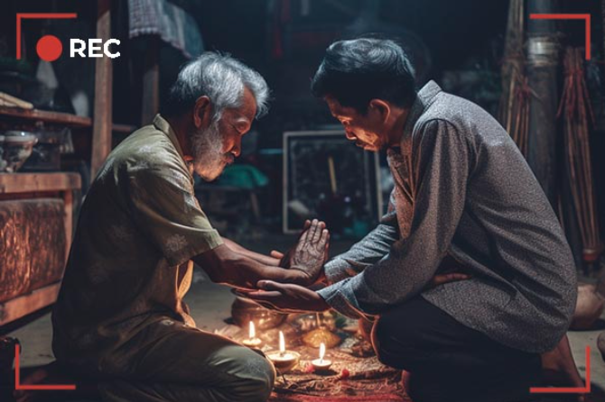
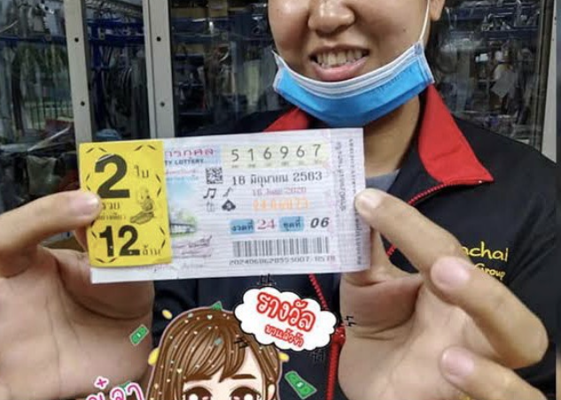
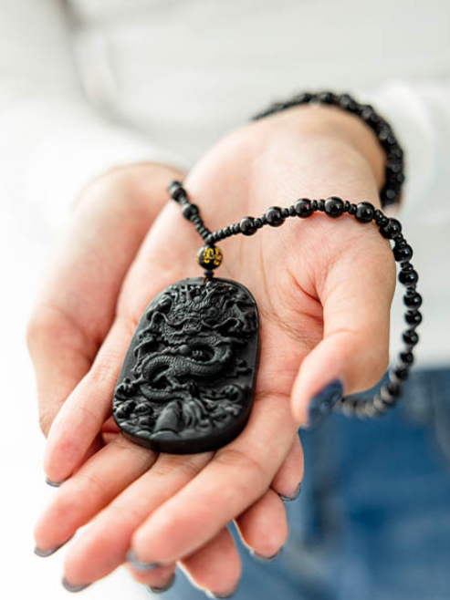

ไวรัลดังทั่วไทย! เครื่องรางนำโชคดึงดูดโชคลาภและเงินทอง: ความจริงหรืออิงนิยาย? รายงานพิเศษของเราที่จะมาเปิดเผยความจริงทั้งหมด!
การสอบสวนที่สร้างความตกใจให้กับประเทศไทย!
- เมื่อไม่กี่เดือนที่ผ่านมา ประเทศไทยนั้นได้สั่นสะเทือนไปด้วยเรื่องราวลึกลับเกี่ยวกับโชคลาภและความมั่งคั่งที่มาจากเครื่องรางปริศนา Dark Dragon amulet. เครื่องรางชิ้นนี้ซึ่งว่ากันว่าจะนำความมั่งคั่งและโชคลาภมาสู่ผู้เป็นเจ้าของ ได้กลายเป็นประเด็นที่ได้รับความสนใจและถกเถียงกันอย่างมาก ระหว่างคนท้องถิ่น และสำนักข่าวทั่วโลก เส้นทางสู่ความมั่งคั่ง: ความจริงหรืออิงนิยาย?
เรื่องราวเกี่ยวกับเครื่องราง Dark Dragon amulet ได้ถูกตั้งคำถามอย่างมากมาย : เครื่องรางนี้สามารถเปลี่ยนชะตากรรมของเจ้าของได้จริง หรือเป็นเพียงตำนานที่สร้างขึ้นเพื่อดึงดูดความสนใจของผู้คน? ผู้สื่อข่าวของเราตัดสินใจที่จะดำเนินการสอบสวนนี้และขจัดข้อสงสัยทั้งหมด
คำบอกเล่าจากปากพยานผู้เปี่ยมสุข
เราได้ติดต่อผู้โชคดีบางส่วนที่อ้างว่าเครื่องราง Dark Dragon ได้เปลี่ยนชีวิตพวกเขาอย่างแท้จริง
หนึ่งในนั้นคือ พงษ์สุข นักธุรกิจหนุ่มจากกรุงเทพฯ เล่าให้เราฟังว่าพระเครื่องนี้เปลี่ยนสถานะทางการเงินของเขาอย่างไร
"ตั้งแต่ผมได้รับเครื่องราง Dark Dragon ธุรกิจของผมก็เจริญรุ่งเรืองและรายได้ของผมก็เพิ่มขึ้นทุกเดือน ผมไม่สามารถนับเงินของผมได้อีกต่อไป - มันคือความมั่งคั่งอย่างแท้จริง!"
ตรวจสอบความจริง
เรามาดูคำถามที่สำคัญที่สุดกันดีกว่า: เรื่องราวเหล่านี้ จริงเท็จแค่ไหน? เราทำการตรวจสอบโดยละเอียดเพื่อดูว่าเครื่องราง Dark Dragon สามารถเปลี่ยนแปลงสถานการณ์ทางการเงินของเจ้าของได้จริงหรือไม่
ความเห็นจากผู้เชี่ยวชาญ
ผู้เชี่ยวชาญด้านพระเครื่องและวัตถุวิเศษ ศาสตราจารย์ ชาตรา ชาตรี เข้ามาช่วยเหลือเราในวันนี้
เขาได้อธิบายว่า: "เครื่องรางมีประวัติศาสตร์อันยาวนานในวัฒนธรรมไทย อย่างไรก็ตาม การพิสูจน์คุณสมบัติของเวทย์มนตร์ทางวิทยาศาสตร์นั้นเป็นงานที่ยากมาก ความสำเร็จของ Dark Dragon สามารถนำมาประกอบกับปัจจัยทางจิตวิทยา - ศรัทธาในโชคของแต่ละบุคคลและความสามารถในการตัดสินใจอย่างมั่นใจ เมื่อศึกษาคุณสมบัติของเครื่องรางอย่างละเอียดแล้ว ผมจึงสรุปได้อย่างมั่นใจว่า เครื่องรางนี้เป็นที่รู้จักมาตั้งแต่เมื่อ 3,000 ปีก่อน เครื่องรางนี้ถูกใช้โดยผู้มีชื่อเสียงผู้มีอำนาจ (ไม่เอ่ยนาม) เครื่องรางนี้ได้ถูกเขียนบันทึกไว้ในม้วนหนังสือโบราณ - ว่าเป็นเสมือนหินจากอวกาศ (ท้องฟ้า) หรือหินพระพุทธรูป วัสดุของเครื่องรางชิ้นนี้มีเอกลักษณ์เฉพาะอย่างแท้จริง - มันถูกแช่ในน้ำศักดิ์สิทธิ์ซึ่งจะทำให้เจ้าของมีรัศมีอันน่าทึ่ง"
ตอนนี้เจ้าของเครื่องราง Dark Dragon ใช้ชีวิตอย่างไร?
การศึกษายังเผยให้เห็นข้อเท็จจริงที่น่าสนใจเกี่ยวกับวิถีชีวิตของเจ้าของ Dark Dragon ในปัจจุบัน พวกเขาหลายคนกลายเป็นผู้ใจบุญ โดยลงทุนความมั่งคั่งในโครงการการกุศล และเครื่องรางนี้ดูเหมือนจะไม่เพียงแต่เปลี่ยนสถานการณ์ทางการเงินของพวกเขาเท่านั้น แต่ยังรวมถึงลักษณะนิสัยของพวกเขาด้วย
เรื่องราวเหล่านี้เป็นเพียงตัวอย่างสมมุติว่าเครื่องราง Dark Dragon อาจส่งผลต่อชีวิตของเจ้าของได้อย่างไร หากเครื่องรางนำโชคลาภและความมั่งคั่งมาให้จริง ๆ บางทีมันอาจจะสร้างแรงบันดาลใจให้ผู้คนประสบความสำเร็จอันยิ่งใหญ่ และช่วยพวกเขาทำให้โลกนี้น่าอยู่ขึ้น แต่สำหรับตอนนี้มันยังคงเป็นปริศนา และเจ้าของเครื่องรางแต่ละคนก็มีเรื่องราวความสำเร็จที่เป็นเอกลักษณ์ของตัวเอง
คำถามที่ยังไม่มีคำตอบคือธรรมชาติที่แท้จริงของ Dark Dragon ซึ่งอาจเป็นสัญลักษณ์ของความโชคดี แรงจูงใจในการบรรลุเป้าหมาย หรือแม้แต่เพียงความเชื่อโชคลาง แต่มีสิ่งหนึ่งที่แน่นอนนั่นก็คือ สิ่งลึกลับนี้ยังคงดึงดูดความสนใจของประเทศไทยและทั่วโลกตลอดจนทำให้เจ้าของร่ำรวยขึ้น
Dark Dragon ไม่ใช่แค่เครื่องราง แต่เป็นออร่าแห่งความโชคดี พระเครื่องราง The Dark Dragon Amulet ยังคงเป็นหนึ่งในปรากฏการณ์ทางประวัติศาสตร์ที่น่าทึ่งที่สุดของประเทศไทยที่ยังคงกระตุ้นจิตใจของเราอย่างต่อเนื่อง
ข้อเสนอพิเศษจากผู้ผลิตเครื่องราง! เราจะคืนเงินให้คุณ 100%หาดเครื่องรางนี้ไม่ช่วยให้ชีวิตคุณดีขึ้น และด้วยเหตุผลอะไรก็แล้วแต่ที่ทำให้คุณไม่พอใจในเรื่องราว และเรายังมอบส่วนลด 50% ให้แก่ผู้ที่สั่งซื้อเครื่องราง จากปกติราคา 1980 เหลือเพียง 990 บาทเท่านั้น
ความคิดเห็น:
นันทภัทร
เครื่องรางชิ้นนี้สวยมากครับ เพิ่งได้รับพัสดุมาเองครับ ยังไม่ทันใดผมก็โชคดีตั้งแต่หัววันเลยครับ ผมถูกหวยครับ ครั้งแรกของผมเลย
พรทิพย์
เครื่องรางชิ้นนี้สวยมากๆค่ะ ดิฉันเพิ่งได้รับมา รู้สึกถึงพลังงานบวกที่แผ่ไปตามร่างกาย แถมดิฉันยังถูกลอตเตอรี่ด้วยค่ะ นี่เป็นครั้งแรกของดิฉันเลย
รัฐภูมิ
ตอนเด็กๆผมเคยไปปฏิบัติธรรมที่ทิเบต ผมจำได้ว่าพวกนักธุรกิจต่างชาติที่นั่นใส่เครื่องรางชิ้นนี้กันแทบทุกคน
ดารารัตน์
หนูกับสามีหย่ากันเมื่อไม่กี่ปีที่ผ่านมา เรามีลูกด้วยกัน 1 คน หนูได้ลองทำตามคำแนะนำของคุณ หนูตัดสินใจสวมเครื่องรางนี้เอาไว้กับตัวตลอดเวลา หลังจากนั้น 2-3 สัปดาห์ สามีของหนูที่หย่าร้างกันไปก็ก่อตั้งธุรกิจของเขา แถมยังขายของดีกว่าเมื่อก่อนมาก ได้เดือนละหลายแสนบาทเลยค่ะ หลังจากที่ชำระหนี้ที่กู้ร่วมกันกับสามีเรียบร้อย หนูกับสามีก็กลับมาอยู่ด้วยกัน และมีแผนที่จะแต่งงานใหม่ในไม่ช้า
ตั๊กแตน
เครื่องรางนี้สุดยอดไปเลยค่ะ รู้สึกถึงพลังบวก ใครที่ตั้งใจเปลี่ยนชีวิตตัวเองจะพบแต่ความเจริญรุ่งเรือง
วิทยา
ผมเพิ่งสั่งไปเมื่อวานนี้ แล้วเมื่อเช้านี้ผมก็ได้รับเครื่องรางแล้ว มันสวยมากๆครับ แค่มองดูก็รู้สึกได้ถึงพลังงานบวก
พรพิมล
ดิฉันขอเล่าประสบการณ์ตรงเกี่ยวกับเครื่องรางชิ้นนี้ค่ะ ลูกสาวของดิฉันเป็นคนที่ขยันเรียนเก่ง แต่ไม่ค่อยมีดวงเรื่องความรักและการงานสักเท่าไหร่ ดิฉันจึงตัดสินใจสั่งซื้อเครื่องรางชิ้นนี้ จากเว็บนี้ ตอนแรกดิฉันก็ไม่เชื่อว่ามันจะเปลี่ยนชีวิตของฉันและลูกสาวไปตลอดกาล แต่ก็คิดว่าซื้อมาลองก็ไม่เสียหาย ผ่านไปไม่ถึงเดือน ลูกสาวของดิฉันก็ได้งานใหม่ในบริษัทต่างชาติ เงินเดือน 50,000 บาท และเธอก็มีแฟนหนุ่มที่มีชีวิตมั่นคงและกำลังจะวางแผนแต่งงานกันในไม่ช้า นี่คือประสบการณ์ตรงจากดิฉันที่อยากแบ่งปันกับคนที่กำลังลังเลที่จะตัดสินใจซื้อเครื่องรางชิ้นนี้ สำหรับที่ฉันแล้วเครื่องรางชิ้นนี้ถือเป็นของขวัญล้ำค่ามากๆค่ะ
ชุติมา
หนูชอบเครื่องรางชิ้นนี้มากๆค่ะ
กาญจนา
สั่งไปแล้วค่ะ พนักงานแนะนำดีมากๆ แถมยังมีส่วนลดด้วย รอพัสดุถึงเลยค่ะ
ณัฐณิชา
ดิฉันสั่งเครื่องรางมาจากเว็บไซต์นี้เหมือนกันค่ะ ลูกๆของดิฉันต่างแยกทางกันไปเติบโตแล้ว และสามีของดิฉันก็เสียชีวิตไปเมื่อไม่กี่ปีที่ผ่านมา มันยากมากๆสำหรับดิฉันที่จะต้องรับมือกับงานบ้านและทำงานไปด้วยในเวลาเดียวกัน แต่หลังจากที่ดิฉันได้สั่งซื้อเครื่องรางชิ้นนี้มาและได้สวมใส่อยู่ตลอดเวลา ก็ได้มีผู้ชายคนหนึ่งปรากฏตัวขึ้น เขาดีกับดิฉันมากๆ และดิฉันตกหลุมรักเขา พวกเราอยู่ด้วยกันอย่างมีความสุข ดิฉันไม่ต้องทำงานงกๆอยู่คนเดียวอีกต่อไป ขอสามีคนใหม่ของดิฉันมีรายได้เพียงพอจนพวกเราไม่จำเป็นต้องกังวลเรื่องการใช้จ่ายเลยค่ะ